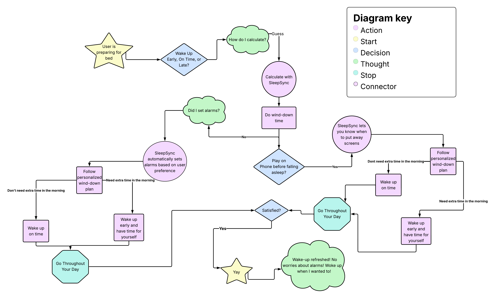

Solution Statement
SleepSync is an application designed to help users maintain a healthy sleep schedule by calculating the ideal bedtime based off of users ideal wake-up time. The app sends personalized reminders during designated "wind down" periods that encourage users to begin preparing for rest.
SleepSync also offers relaxing music, tips for falling asleep faster, and more to create a calming nighttime routine. Together, these features make SleepSync more than just an alarm - it's a sleep companion.
Solution Characteristics
- Our application has all of the resources in one location to help improve users' sleep quality and allow them to go to sleep faster.
- The app will allow users to have a personalized sleep schedule that fits their schedule.
- Our app increases awareness of time spent on phones and lets them know the best time to start winding down.
- Our application automates a blue-light filter that slowly increases the later in the afternoon it becomes.
- Holistic sleep health including stress management resources, exercise timing awareness, and nutrition/caffeine education.
Current Solution Flow
